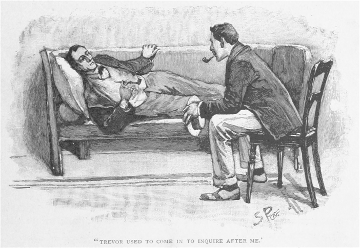
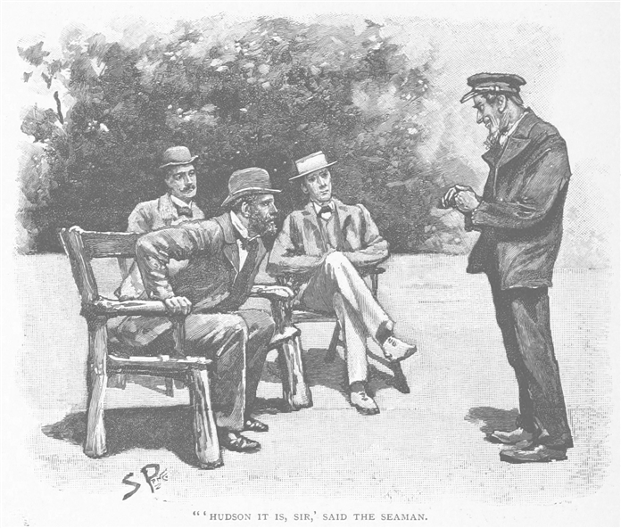
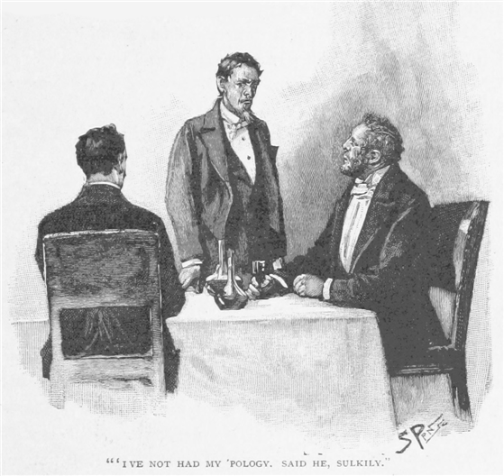
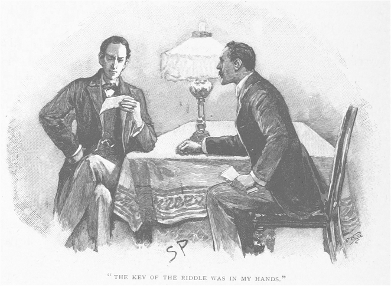
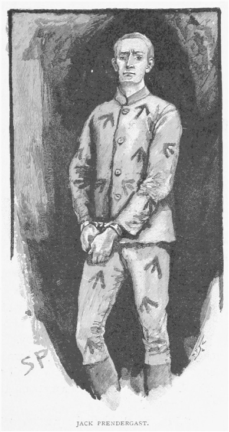
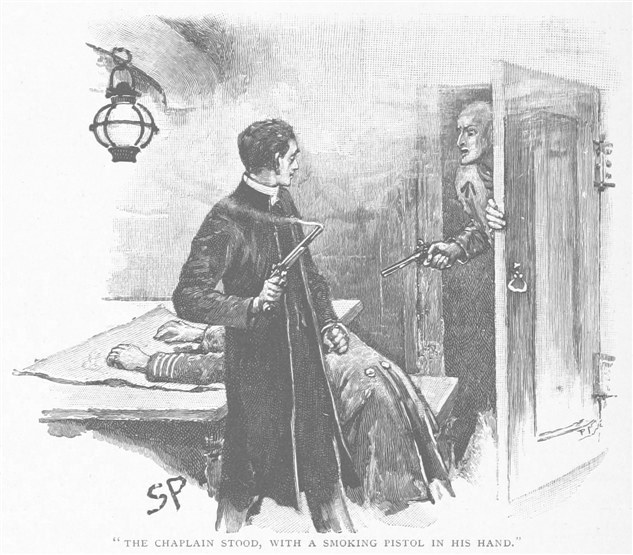
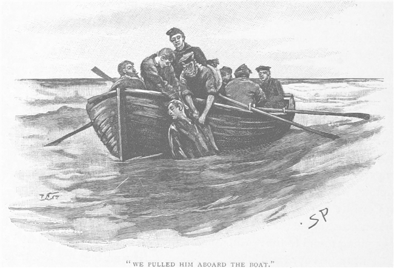

「そういえば資料がある。」と我が友人シャーロック・ホームズが言ったのは、冬のある夜のことで、我々は火を囲んで腰掛けていた。「念を押すが、ワトソン、一読の価値ありだ。ほら、くだんの『グローリア・スコット号』の怪事件の資料だ、特にこの文面は、治安判事のトレーヴァを読むなり戦慄させ死に至らしめたのだ。」
ホームズは引き出しから少し色あせた巻紙を取り出し、そのひもをほどいて、私に小さな紙を手渡した。青みのある灰色で、半切、ひどい字がのたくっていた。
もはや鶏肉は順調にすべてロンドンへ出荷が終わった。狩場 の主任のハドソンは蠅取紙の注文の一切を必ず受けると知らせた。あなたの雌雉が危ないので主任に命じて高飛びを助けて落ちないようにしろ。
この謎に満ちた手紙を読み終わって顔を上げると、私の目に、こちらの表情を見てほくそ笑むホームズの姿が映った。
「いささかお困りのご様子。」とホームズ。
「わからん、こんな手紙のどこに恐れをなすのかね。どちらかというと、妙なものとは思うが。」
「だろうね。だが事実はこうだ。読んだ人物は壮健なご老人であったのだが、その紙がためにうちひしがれてしまった。あたかも拳銃の台尻で殴られたかのように。」
「私をあおるつもりか。」と私。「だがどうして今更そんなことを。この事件を研究しなければならない別段の理由でもあるのかね。」
「僕の手がけた最初の事件なのだ。」
かねてから私は、折に触れては、この友人が犯罪捜査に心を向けたきっかけを探ろうとしてきた。だがこれまで気さくに話してくれることはなかったのだ。このときばかりは、ホームズも座っていた肘掛椅子から身を乗り出して、膝の上に例の資料を広げた。それからパイプに火をつけて、しばらくのあいだ煙草をくゆらせながらその紙をめくった。
「ヴィクタ・トレーヴァのことは初めて話すかな？」とホームズが切り出す。「大学に在籍した二年間でできた唯一の友人だった。僕は決して人と交わる人間ではなかった。ワトソン、むしろいつも自分の部屋にこもって、ささやかな思考実験をするのが好きだった。だから少しも同年輩のものとつきあわなかった。剣術と拳闘以外、身体を動かすことに興味も持てず、しかも研究の方向性も他の連中とはきわめて異質であったから、接点すらなかった。トレーヴァは知り合えたたったひとりの人間でもあり、そのきっかけというのもほんの偶然で、ある朝、僕が教会へ向かう途中、彼のブルテリアが僕のくるぶしにかみついたのだ。

芸のない友情の始まり方だが、十分だった。僕は十日間歩けず横になり、トレーヴァはよく見舞いに来た。最初は短く言葉を交わすだけだったが、すぐに長く居座るようになって、治る頃には親友になっていた。彼は情のある熱血漢、血気盛んといった具合で、どこから見ても僕と正反対だったが、どこか相通じるところがあった。やがて彼もまた私と同様、友人がいないとわかり、固い絆となった。結果、彼は父君の住むノーフォーク州のドニソープへ僕を招き、一ヶ月の長期休暇のあいだ、もてなしを受けた。彼の父君は、どうやらいくらか財産も名誉もある人物で、治安判事であり地主であった。このドニソープというのは、湖や沼の多いブローズ地方にあって、ラングミアのちょうど北方に位置する小さな集落だ。屋敷も、古風な幅のある楢の梁を持った煉瓦造りで、建物まで見事なライムの並木道が続いていた。優雅な野鴨のいる湿原に、釣りに最適な場所、おそらく先代から受け継いだのだろうが、小さいながらも揃いのいい図書室があり、炊事係も及第点だった。だからよほど気むずかしい男でない限り、そこで愉快に一ヶ月暮らすことは何でもないことだろう。
トレーヴァの父君は妻に先立たれていて、友人は彼の一人息子だった。
聞いたところでは娘がひとりあったそうだが、バーミンガムへ行った際にジフテリアで亡くなったそうだ。この父君という人に僕はとても惹かれた。あまり学はなかったが、身体にも心にも荒削りだが力が満ちていた。本もほとんど読まないそうだが、方々へ旅をし、世界の様々を見聞し、学んだことは忘れない。見た感じでは筋骨隆々の男で、生えるままの灰色の髪、日に焼けた赤ら顔に碧い目は、一歩間違えば凶暴なほどに鋭い。それでいて、彼はその田舎近辺では、思いやりの深い人間として有名であり、その判事席から出す判決の寛大さがよく知られていた。
僕がそこへ着いてまもなく、ある夕べのこと、僕たちは晩餐のあとに腰掛けて葡萄酒を飲んでいた。とそのとき、息子の方が僕の観察や推理の癖について話し出した。僕はそのときまでにひとつの体系を作り上げていたが、現実世界でその力が役立つとは考えてみたこともなかった。父君の方は、息子が友人のしたつまらん芸のひとつふたつを大げさに話したとでも考えたに相違ない。
『では、ホームズくん。』と彼は朗らかに笑いながら言う。『私はうってつけの相手だ。私から何か推理できるかね？』
『あまり多くはわからないかもしれません。』と僕は返事をして、『察するに、あなたはこの十二ヶ月のあいだ、誰かに襲われるのではと恐れておられる。』
すると彼の顔から笑みが消え、驚愕といったふうに僕を見据える。
『ああ、まさにその通りだ。』と彼は言った。『だな、ヴィクタ。』と息子の方を見ながら、『あの密猟団を追っ払ったとき、やつらは「お前ら刺し殺してやる」と吐き捨てた。やがてエドワード・ホビィ勲士が本当に襲われた。それ以後、常に自分の身を用心している。君はどうしてそれが分かったのかね？』
『実に素敵な杖をお持ちです。』と僕は答えた。『その彫りを見る分には、まだお持ちになって一年とない。だがわざわざ杖の頭に穴を開け、中に溶かした鉄を入れて、手強い武器になさった。危険を感じてない限り、そんな備えはしないと言えましょう。』
『それから他には？』と彼はほほえみながら訊く。
『お若い頃、ずいぶん拳闘をなさった。』
『また当たり。どうしてそれが分かる？ 鼻筋がどこか曲がっとるかね？』
『いいえ。』と僕は言う。『あなたの耳です。その独特な平たさと薄さ、拳闘をやる人特有のものです。』
『まだ他には？』
『採掘作業をかなりやったことが、その
『全財産を金鉱で稼いだ。』
『ニュー・ジーランドの滞在経験が。』
『これまた当たり。』
『日本へいらっしゃった。』
『その通り。』
『それから、かつて深いおつきあいをしてらした方に、頭文字Ｊ・Ａの方がいるが、その後、何とかして忘れ去ろうとなさった。』
父君は静かに立ち上がると、大きな碧い双眸を僕に向けて、妙ににらみつけ、そして前へ倒れ込んで、顔を布に出してあった胡桃のなかへ突っ込んでしまった。気絶したのだ。
考えてみたまえ、ワトソン、友人と僕は思わず肝を冷やした。だがその騒ぎもすぐに終わって、僕たちが彼の襟を外して指洗いの水で彼の顔をしめらせてやると、少しむせかえったが、やがて起きあがった。
『おお、まったく！』と彼は無理に笑うのだ。『もう心配ご無用。こう見えてもどうも心臓は弱いところがあってな。停まるほどひどくはないんだ。しかし種はさっぱりだが、ホームズくん、どうも、事実や考えを探り当てることなどは、君の手にかかれば児戯にも等しいようだな。これが君の生きる道だ、な、世界中を見てきた男の言うことだ、やればよろしい。』
かくして、父君が目の当たりにした手際をやたら評価して勧めるものだから、嘘だと思われるかもしれぬが、そのとき、まさにはじめて僕は、職業としてやれるのかもしれぬと思った。その瞬間まで趣味に過ぎなかったのにだ。だが当座は家主の急病で気を取られていたから、それ以上のことは考えられなかった。
『僕の言ったことで、不快な思いをされてなければいいのですが。』と僕は言った。
『なに、確かにちょっとびっくりはしたが。教えてもらってもいいかな、知り得た理由と知り得た程度を。』と冗談交じりに言うのだが、彼の目のかげには恐怖の色が潜んでいた。
『それ自体は簡単です。』と僕。『魚を小舟に引き上げようと腕をおまくりになったときに見たのです。肘のところのＪ・Ａという入れ墨を。その字は今でも読めますが、不鮮明になっている点、その周辺の肌が汚れている点から、まったく明らかなのは、消す努力をなさったということです。よって導かれるのは、この頭文字は、かつてはたいへん近しいものであったが、のち忘れようとしたものであるということです。』
『君は何という目を持っているんだ。』と彼はほっとしたような息をつく。『君の言う通りだ。だが、この話はこれくらいにしよう。亡霊のなかでも古い恋の亡霊ほどたちの悪いものはない。玉突き部屋へ行って、静かに煙草を吸おうじゃないか。』
その日から、父君の僕に対する態度は、親切でありながらもいつもどこか
庭の芝生に出した椅子に腰掛け、僕たち三人は沈み行く太陽を眺めながら、広がる湖沼地帯の景色を楽しんでいた。と、そのとき、女中が来て、父君に会いたいという人が玄関に来ていると伝えた。
『して名前は？』とその家の主人が訪ねると、
『それが何とも。』
『なら何用かね。』
『そちらがご存じだから、ちょっとばかり話をさせろと仰せで。』
『こっちに通してくれ。』まもなく現れたのは、よぼよぼの小男で、ぺこぺこしながら足を引きずってやってきた。胸のあいた上着に、コールタールの染みだらけの袖、赤と黒の市松模様のシャツ、ダンガリーのズボン、ひどくすり切れた重いブーツといった格好だった。痩せているが、赤くずるそうな顔が終始にたついていて、不揃いな黄色い歯を見せる。そして皺だらけの腕を船乗り独特のやり方で、半分だけ組んでいた。その男が芝生を横切って、うつむき加減に来たとき、僕は父君の喉の奥から、しゃっくりを出したような音を耳にした。そして彼は椅子から飛び上がると、家のなかに走り込んだ。すぐ引き返してはきたが、僕のそばを通るとき、強いブランデイの匂いがした。
『そこの君。』と父君は言う。『私に用かね。』
船乗りは立ち止まると、じっと目を据え、だらしなく口を開いてにやにやする。
『俺がわからねえのか。』と男は言う。
『おお、なんだ。ハドソンじゃないか。』父君の声はうわずっていた。

『そうともハドソンさ。』と船乗り。『もう三十年ぶり、もっとか。最後に会ったのは。お前は自分の城を築いたが、こっちはまだ樽のなかから肉の塩漬けをつまんでるんよ。』
『いや、私だって昔のことを忘れはせんよ。』父君は大声で叫びながら船乗りの方へ近づいていって、何かを小さく囁いた。『台所へ行けば。』とまた大声に戻って、『飲み食いできよう。むろん職だって何とかしてやろう。』
『ありがてえなあ、旦那。』と船乗りは前髪を触る。『人手不足の貨物船に二年ばかし乗って降りたばかりで、休みてえところだった。ベドウズさんか旦那、どっちでもらおうかと思ってさ。』
『えっ！』と父君は声を上げる。『ベドウズの居所を知っているのか？』
『おやおや、旦那、古なじみの居場所なんてみな知ってるとも。』と、その男は皮肉な笑いを浮かべる。そして女中に連れられ台所の方へ足を引きずりながら歩いていった。父君は僕たちに、金を掘る前はあの男と一緒に船乗りをしていたとか何とかつぶやいてから、僕たちを芝生に残して屋内に入ってしまった。一時間あと、僕たちも家へ入っていくと、先ほどの男が酔っ払って食堂の長椅子に伸びていた。全体としてかなり嫌な印象を残した出来事だった。その翌日、ダニソープを引き上げるにあたって未練はなかった。僕のいることが、友人の悩みの種になっているに違いないからだ。
ここまでの出来事はみな、長い休暇のうちの、最初のひと月で起こったことだ。僕はロンドンの自室に戻って、それから七週間ばかり、有機化学について若干の実験をしながら過ごした。しかしある日、休みが終わろうというときのことだ。親友から電報を受け取った。戻ってくれ、相談したい、手伝ってくれ、そう書いてあったから、無論、僕は一切を放擲して再び北に向けて出発した。
彼は二輪馬車で停車場まで迎えに来てくれたが、一目見るなり、この二ヶ月のあいだ苦労をしたのだとわかった。悩みのためにやつれて、あの取り柄であった朗らかな調子もなくなっていた。
『親父が死にそうなんだ。』と彼は開口一番に言った。
『そんなまさか！』と僕は声を上げる。『いったい何が？』
『卒中だ。神経性ショックだ。ずっと峠にいる。もう元気な姿は拝めないと思う。』
わかってくれると思うが、ワトソン、思いがけない話で、背筋も凍ったよ。
『原因は？』と僕は訊いた。
『ああ、問題はそれなんだ。乗ってくれ、みちみち話そう。覚えてるかい、帰る前の日の夕方、男がやってきたろう？』
『鮮明に。』
『あの日、家に入れてやったあの男、何者だと思う？』
『わからん。』
『あれは悪魔だよ、ホームズ。』と彼は声を張り上げる。
僕は驚いてトレーヴァを見つめた。
『そうだ、悪魔そのものなんだ。あれ以来、心休まる日はなかった――ただの一日も。親父はあの夕べ以来、ずっとうつむき加減で、そして今や、命の火を絶やそうとしている。親父の心が折れたんだ、それもみんなあの忌々しいハドソンのせいだ。』
『その男にいったいどんな力が？』
『ああ、そんなの僕の方こそ知りたいよ。親切で人のいいあの親父が――あんな悪党に捕まるなんて。だけど、君が来てくれて本当に嬉しいよ、ホームズ。君の判断と分別は信頼してる。だから、君は僕に、きっと最善の手段を教えてくれる。』
僕たちはなだらかな白い田舎道を走っていった。目の前には湖沼地帯が広がっていて、沈みかかった太陽の赤い光を映じている。左手にある森の上に、地主の屋敷を示す高い煙突と旗竿が先ほどから見えていた。
『親父は奴を庭師にしたんだよ。』と親友は言った。『だがやっこさん、それに飽きたらず、執事に出世させてもらったんだ。もう家は奴の意のままだよ。家中をほっつき回って、やりたい放題だ。女中たちはあいつの飲酒癖と乱暴な言葉遣いにたまりかねてる。親父はその不平を抑えるためにみんなの月給を上げてやるという始末。それなのにやっこさんは、小舟を引っ張り出し、親父の上等の鉄砲を持ち出して、気晴らしに撃ちに出かけるんだ。しかもそれをやるときの顔と来たら、小馬鹿にしたような、意地の悪そうな横柄な顔、あいつが同じ年くらいの男だったら、もう二十回は殴ってるところだ。正直、ホームズ、僕はこのあいだじっと我慢してて、始終迷ってたんだ、自分から事を起こすのは、馬鹿なことなんじゃないかって。
ところが事態はますます悪くなっていくんだ。このハドソンって
「息子よ。」と親父は言った。「話せればいちばんいいのだが、私の立場をお前は知らん。だがいつか絶対に話す、ヴィクタ。何かが起これば、きっとお前は知るのだと思う。この哀れな父親を悪者扱いせんでくれ、なあ。」親父は僕の言葉に動揺して、その日は書斎から出てこなかった。窓からのぞいてみると、親父は忙しそうに何かを書いていた。
同じ日の夕方、大きな救いのようなものがやってきた。ハドソンが僕たちの家から出て行くと言い出したんだ。ちょうど夕食のあと、食堂で座っているときに歩いてきて、ほろ酔い機嫌のしゃがれ声でその意思を告げたんだ。
「ノーフォークはもうたくさんだ。」とあいつは言った。「ハンプシアのベドウズさんとこへ突っ込むわ。お前さん同様、おいらに喜んで会ってくれるよ、なあ。」
「気分を害して出て行くんでなければいいがね、ハドソン。」親父の言い方は馴れ馴れしくて、僕の血は煮えくりかえった。
「詫びはなかったぜ。」とあいつは僕の方に意地悪そうな目を向ける。

「ヴィクタ、大切な客人に向かって失礼だとは思わんかね。」と親父も僕の方を向く。
「それどころか、こちらは特別我慢してやったと思っています。」と僕は答えてやった。
「おう、ぬかしやがったな。」とあいつはうなった。「上等だ、野郎。覚えてな！」
あいつは足を引きずりながら部屋から出て、三十分ののち、家からも出てしまった。あとに残ったのは、気の毒なほど神経を病んだ親父だけだ。それから毎晩、自分の部屋を歩き回る親父の足音を耳にした。また襲われるのではという不安がぶり返したみたいだった。』
『そしてどうなった？』と僕は先を促した。
『まったく途方もない展開だよ。一通の手紙が昨日、親父の元に届いた。フォーディンブリッジの消印があった。親父はそれを読むなり、頭を抱えて、部屋の中をぐるぐる輪を描いて回り始めたんだ。ついに頭がおかしくなったのかと思ったよ。捕まえてやっと長椅子に落ち着かせたときには、親父の口もまぶたも引きつっていて、卒中を起こしたことに気がついた。すぐにフォーダム先生に来てもらって、寝台に運び込んだけど、痺れはひどくなる一方で、意識を取り返す兆しすらない。回復は絶望的なんだと、僕は思う。』
『恐ろしい話だ、トレーヴァ。』と僕はうなる。『とすると、その手紙に何かあったわけだ、そんな恐ろしい結末に至らせるほどの何かが。』
『それが何もないんだ。そこが訳の分からないところなんだ。文章は意味不明のくだらないことで、ああ、まったく、こうなることを恐れてたのに！』
話をするうち、僕たちは並木道の角を曲がっていた。そして夕闇のなか、家の鎧戸がすっかり下ろされているのに気づいた。僕たちは玄関に飛びついたが、親友の顔は悲しみのために震えていた。黒い服を着た紳士が、中から出てきた。
『最期はいつでした、先生。』とトレーヴァが訊く。
『お出かけになって、まもなく。』
『意識は戻りましたか？』
『ご臨終の前に少し。』
『僕に何か？』
『ただ、日本箪笥の裏の引き出しに書類がある、とだけ。』
親友は医者と一緒に亡骸のある部屋へ上っていき、そのあいだ、僕は書斎に残って、この事件のすべてを繰り返し頭のなかで考えてみた。そして僕は、自分のことのように厳粛な気持ちになった。この父君の過去とは何か？ 拳闘家、旅人、金の採掘者。どうしてあのきつい顔の船乗りのいいなりになる羽目になったのか。また、なぜ彼は半分ほど消した腕の入れ墨に気づかれて、気を失い、どうしてフォーディンブリッジからの手紙に戦慄して死んだのか。そのとき、僕はフォーディンブリッジがハンプシアにあると思い出した。同時に、このベドウズという人、おそらく例の船乗りが訪ねていって強請るのであろうが、その人もハンプシアに住んでいると気づいた。とすれば、その手紙は船乗りのハドソンから来たもので、隠していた罪が何かあって、それを密告するぞとでも言ったのか、でなければあるいは、ベドウズから、密告がなされそうだと、昔の仲間に警告してきたのか。そこまではだいたいはっきりしている。だがならば、その手紙が、どうして親友の言うように、くだらない妙なものなのか？ 読み方を間違ったに違いない。だとすれば、それは巧妙な秘密の暗号の一種なのかもしれぬ。ある意味を示しているようで、本当は別の意味があるのだ。その手紙を見なければならぬ。そのなかに隠された意味があるとすれば、僕ならそれをつかみ出せるという自信があった。一時間のあいだ、僕は薄闇のなかに座りながら考えていた。が、やがてひとりの女中が泣きながらランプを持ってきた。そしてその女中と入れ違いに、親友がやってきた。顔は青いが落ち着いていて、僕の膝の上にある、まさにこの書類を手にしていた。彼は僕の向かいに座り、机の端の方へランプを引き寄せて、何かが書き殴られている小さな紙を、僕に手渡した。ほら、その一枚だ。その灰色の紙だ。
もはや鶏肉は順調にすべてロンドンへ出荷が終わった。狩場 の主任のハドソンは蠅取紙の注文の一切を必ず受けると知らせた。あなたの雌雉が危ないので主任に命じて高飛びを助けて落ちないようにしろ。
実を言えば、この文章を初めて読んだとき、僕も今の君と同じように、困惑した顔をしていた。そこで、僕はよく気をつけてもう一度読み返した。それは確かに僕が考えた通り、不思議な言葉の組み合わせに何か意味が隠されているに相違なかった。でなければ、『蠅取紙』や『雌雉』とかいう言葉に、前から特別な意味が決めてあるとでもいうのだろうか。そんな意味があるとすれば、どのようにも決められるし、演繹のしようもない。その上、僕としてもそれが正しいとは信じたくなかった。ハドソンという言葉が現れていることからも、この手紙の用件はさきほど推理した通りだとわかり、差出人がその船乗りではなくベドウズだともわかる。僕は逆に読んでみた。『ろしにうよい……』と続いて萎えた。そこで文節に切って、ひとつおきに読んでみたが、『もはや順調にロンドンへ終わった』や『鶏肉はすべて出荷が狩場の』では何の光も見えない。

ふと、その瞬間、この謎を解く鍵を手に入れた。最初の言葉から始めて、文節ごと、２つおきに読んでいけば、ひとつの文章となる。それが父君を絶望へと追いやったのだ。
ごく簡潔な警告文で、そこで、僕は友人にその文面を読んでやった。
もはやすべて終わった。ハドソンは一切を知らせた。危ないので高飛びをしろ。
ヴィクタ・トレーヴァは、震える両手に顔をうずめた。『それで間違いない、たぶん。』と言った。『死ぬよりもひどいことなのだろう。加えて、不名誉を意味するんだからな。だけど、この「狩場」や「雌雉」というのは、何だろうね。』
『この手紙では何の意味もないが、もしこの手紙の差出人を特定する他の手段がないものとすれば、大きな意味を持ってくる。ほら、こういう書き出しで始まるだろう。「もはや……すべて……」云々。あとは決めてあった暗号通りに、それぞれふたつずつ何か言葉を埋めていく。だとすれば、まず自然に思いついた言葉を埋めるだろうし、そこで狩りに関係する言葉が多く出ているのならば、その人物は熱心な狩人か、養鶏に興味を持っていると考えてもよかろう。君はベドウズについて何か知っているか？』
『ああ、君の言う通りだ。』と彼は言った。『そういえば、死んだ親父は、ベドウズから自分の地所でする猟の招待状を、秋になるといつももらっていたな。』
『では、この手紙が彼から来たものであることは間違いない。』と僕は言った。『僕たちに残されたことは、この秘密が何か突き止めることだ。この船乗りのハドソンが、何でもってこの尊敬すべきふたりの資産家の頭を押さえたのか。』
『ああ、ホームズ、僕には、その何かは罪のようなもので、不名誉なことだと思うんだ！』と彼は語気を強める。『だけど、僕は君に隠し立てしようとは思わない。実はここに親父の書いた告白文がある。ハドソンからの危険が避けられないと分かって、そのときに自分で書いたんだろう。僕はそれを、親父が医者に告げた通り、日本箪笥のなかに見つけた。渡すから読み上げてくれないか。僕には自分で読むだけの気力も度胸もないんだ。』
それがこの資料というわけだ、ワトソン。そのとき僕は渡されて、古風な書斎でその夜、彼に読んだのだが、同じように君にも読もう。見たまえ、裏側の見えるところにこう書いてある。「小型帆船グローリア・スコット号、航海の顛末、一八五五年一〇月八日ファルマス出港から一一月六日北緯一五度二〇分・西経二五度一四分、崩壊に至るまで」。手紙形式になっていて、こんなふうに始まる。
『私の愛しい愛しい息子よ、忍び寄りつつある不名誉が、私のいくばくもない余命を暗くし始めた。そんな今だからこそ、私は正直に嘘偽りなく記すことができる。それは法律を恐れるからではなく、この地方における地位を失うからでもなく、また私を知るすべての人の目にさらされ没落するからではなく、私がもっとも心を痛めるのは、お前が私のために恥をかかねばならぬ、そのことだけだ――お前はただ、私を愛し私をただ一心に尊敬してくれたというのに。ずっと私の頭上に宙づりになっていた恐れがついに落ちてきたら、そのときはどうかこれを読んでほしい。いかに父が恥ずべき人間であったかを、直接知ってほしい。だが反対に、万事がうまく行き（全能の主よかくあれかし）、何かの拍子でこの手紙が破棄されず、お前の手元に渡ることがあったなら、頼むから信じるすべてのものにかけて、愛するお前の母の思い出にかけて、またふたりの愛にかけて、これを火の中にくべ、二度と思い出さずにいてくれるとありがたい。
この文章がお前の目に触れていると言うことは、私の秘密は暴かれ家から連行されたか、もしくは、こちらの方がありそうだが、心臓が弱まり、口を緘したまま死ぬかしているに違いない。いずれにしても、もうひた隠しにするときは過ぎた。私の語るすべての言葉は、ありのままの真実だ。ここに述べることをどうか許してほしい。
私の本名は、息子よ、トレーヴァではない。若い頃はジェイムズ・アーミティッジといったのだ。今なら数週間前、私が卒倒した理由もわかるだろう。あのとき、お前の学友は、私の秘密を不意打ちするような言葉を私に向けたのだ。アーミティッジとして私は、ロンドンの銀行に入り、アーミティッジとして我が国の法を犯したため有罪となり、流刑を言い渡されたことがあった。どうか私を厳しく見ないでくれ、息子よ。それはいわゆる名誉の負債というものを支払わねばならず、そのために私は自分のものではないお金を使った、なくなったことを気づかれることなく返しておけるはずだったのだ。ところが、実に恐ろしい不幸に見舞われ、使ったお金はひとつも回収できず、抜き打ちの会計監査で、私の使い込みがばれてしまった。事件の処置は寛大であったともいえようが、三〇年前の法律は、今日より遥かに厳しく執行されており、二三歳の誕生日、私は重罪人として鎖につながれ、他の三七人の罪人とともに小型帆船グローリア・スコット号の中艙に押し込まれ、オーストラリアへ送られることとなった。
それはクリミア戦争まっただなかの五五年のことで、古くからの囚人船はほとんどが黒海で運送目的に使用されていた。そのため政府はそれらの囚人を送るにはあまり適当でない、小さめの船を使わざるを得なかった。そのグローリア・スコット号は、かつて中国茶の取引に使われていたが、旧式で船首が重く、船梁の広い船で、新型の快速船に取って代わられていた代物だ。五百トンあり、三八名の囚人のほか、乗組員二六名、兵士一八名、船長一名、航海士が二名、医者一名、牧師一名、それから看守が四名いた。都合一〇〇人ばかりの者がファルマス出港時点でその船に乗っていたという話だ。
囚人の入っている部屋のあいだの仕切は、普通囚人船で使われているような厚い楢材ではなく、きわめて薄くもろいものだった。船尾側ひとつ隣の男のことは、埠頭に連れて行かれたときに、とりわけ気になっていた人物だった。若い男で、ひげのないすべすべした顔、細長い鼻、どこか胡桃割り人形のような口、彼は愉快気に反り返って意気揚々と歩いており、他の者よりもぬきんでて背が高かった。我々なんぞでは彼の肩にも届こう者はないと思えたし、少なく見積もっても六フィート半はあるに違いなかった。不思議だったのだ、悲しそうな弱々しい顔が並んでいるのに、ひとりだけ力とやる気に満ちている。その光景が私には、吹雪のうちの炎のように思われた。そのため、彼が隣にいると知って、私は嬉しかった。さらに嬉しかったのは、真夜中、私の耳近くに囁く声を聞き、そうして隔てていた板に彼が穴を開けたと気づいたときだった。

「おい、ダチ公！」と声がする。「名前はなんて言う？ 何をやっちまった？」
私は彼に返事をして、今度は君は誰だと聞いた。
「俺は、ジャック・プレンダギャスト。」と聞こえてくる。「嘘じゃねえぜ！ ようく覚えておきな、そのうち『様』をつけるようになる。」
その男の事件については覚えがあった。というのも、私が逮捕される少し前、その事件は国内に大きな騒動を巻き起こしたからだ。彼は良家の出で才能もあったが、根は直せないほどの
「ハッハッ！ 俺の事件を知ってるか！」と彼は自慢そうに言う。
「そりゃあもうずいぶん。」
「なら、その事件で何か妙なところがあったのは覚えてないか？」
「何でしたっけね。」
「俺は二五万ばかりぶんどったんだったな？」
「そんな話でしたね。」
「だが、一銭も返ってこなかった、え？」
「一銭も。」
「そうだ、その金はどこへ行ったと思う？」と彼は言った。
「さっぱりです。」と私は答えた。
「ちゃんと俺の親指と人差し指のあいだにある。」と声を張り上げる。「嘘じゃねえぜ！ 俺のものになった金は、お前の頭の髪の本数よりも多い。それにな、人は金があって、おうよ、なおかつ使い方とばらまき方を知ってりゃあ何でもできる。だから考えられねえよなあ、そんな何でもできる男が、ケツをすり減らしながら臭え船倉のなかでおとなしくしてるなんてさ。チャイナ中国の貿易船のネズミとゴキブリだらけの黴臭えおんぼろ箱のなかで終わるとかありえねえ。そうだぜ、旦那、そういう人間は自分でケツ拭いて、自分の仲間の面倒も見るんよ。あんたも一枚噛んでもいいぜ！ そいつにすがるのさ、聖書にキスして誓やあ、そいつから引きずり出してくれるぜ。」
これが彼の話しぶりだった。初めのうち私は、戯言だと思っていた。だがしばらくして、彼が私を試し、きわめて真面目に誓う段になると、この船を乗っ取ろうとする計画が本当にあるのだと知らされた。一二人囚人たちが乗船前にひそかに企んでいて、プレンダギャストはその首領であり、そして彼の金がその原動力なのだった。
「相棒がひとりいる。」と彼は言う。「得難い男でさ、銃床が銃身に対するがごとく誠実なんだ。そいつが銭を持ってて、あるんだ、で、今この瞬間、そいつはどこにいると思う？ なに、その男というのは、この船の牧師さ――なんと牧師さまだよ！ 奴は黒い僧服をまとって乗り込み、箱のなかにじゅうぶんな金を入れてて、それで竜骨から大檣までまるごと買収できる。乗組員もみんな奴の手足さ。大勢まとめて現金割引で買っちまったのよ。それも契約前にな。あと看守ふたりと二等航海士のミリアもこっちのもんだし、奴はなる価値があると思えば船長になっただろうね。」
「で、我々は何をすればいい？」と私は訊いた。
「お前はどう思う？」と彼は言った。「ここの兵隊の上着を、服屋がこしらえたより、もっと真っ赤に染めてやろう。」
「だが、武装してる。」と私は言った。
「こっちもする手はずなんだよ、坊や。俺たちガキんちょめいめいに拳銃が二丁ずつある。で、後ろに乗組員もいんのに、この船をモノにできないんじゃ、こりゃみんなして寄宿の女学校へ寄越されるしかねえやな。今夜、左側の奴にも話して、信用のできる奴かどうか見といてくれ。」
言われた通りにすると、隣の男というのは、私と同じような境遇の若い男で、文書偽造罪に問われたらしい。名をエヴァンズというのだが、のちになって私と同じく名を変え、今はイングランド南部で成功して資産家になっている。むろん彼は喜んでその陰謀に加わった。自分自身を救う方法はそれしかないのだ。こうして海峡を越えないうちに、秘密に荷担しないものは船内でただふたりきりという状態になった。そのうちのひとりは意志薄弱で、とうてい信用などできない奴で、もうひとりは黄疸にかかって役に立たなかったのだ。かくして最初から、その船の乗っ取りに何一つ支障はなかった。乗組員はその仕事のためにとりわけえり抜かれた悪党の集まりだった。そして偽牧師は、部屋べやに説教しに来たが、手には黒い袋を持っていて、そのなかは教会の小冊子しか入ってないと思われているわけだ。頻繁に来るので、三日目には誰もが寝台の下にヤスリ一丁と拳銃二丁、火薬一ポンドに二〇発の弾丸とを隠し持つことができた。看守ふたりはプレンダギャストの手先で、二等航海士は彼の右腕だった。だから、船長と航海士二名、看守二名にマーティン中尉とその一八名の兵士、それと医者ひとりが対する敵のすべてだった。それでもなお、まだ安全を期すため、ぬかりなく進め、そして夜中に不意打ちする算段だった。けれども予定していたよりも早く、時は来た。それが以下の次第だ。
出港してから三週間目のある夜のこと、医者が病気の囚人をひとり診に来たのだが、その囚人の寝台のなかに手を入れて、拳銃の形を悟ってしまったのだ。黙っていたならすべて流れたのに、その医者は臆病者で、驚いて声を上げて、顔を真っ青にしてしまったため、その囚人も何が起こったのか感づいて、その医者を捕らえてしまったのだ。大声を上げないうちに猿ぐつわをはめて、寝台の下にしばりつけてしまった。医者は甲板に通じるドアに鍵をかけなかったので、私たちはそこを通って躍り出た。歩哨ふたりが射殺され、何事が起きたのかと調べるために走り寄ってきた伍長も同様だった。もうふたりの兵士が戸の外にいたが、手のマスケット銃には装弾されていなかったと見え、撃つことができず、銃剣をつけようとしているあいだに撃ち殺された。こうして我々は船長室に突進したが、戸を押し開けたとき、なかから発砲音が聞こえてきた。現場で、船長は卓上に止められてあった大西洋の地図に頭を押しつけており、かたわらには牧師が硝煙の立つ拳銃を手に、肘を立てて構えていた。また、看守二名は乗組員にどちらも押さえ込まれ、かくしてすべての仕事は片が付いたように見えた。広間が船長室の隣にあり、我々はそこに集まって、長椅子に身を投げて、お互いに談笑した。再び自由な身になったことを実感して舞い上がっていたのだ。その部屋の壁際にはどこにも戸棚がついていて、偽牧師のウィルソンは、そのひとつをたたき割って、そこから赤いシェリー酒を一ダース引っ張り出してきた。我々はその瓶の首をたたき落として、中身を大きな入れ物に注いで、一息に飲み干そうとしたその瞬間、いきなり前触れもなくマスケット銃の音が聞こえ、広間はその煙でいっぱいになり、机の向こうが見えない有様だった。その煙がすっかりぬぐわれると、そこはまさに恐ろしい修羅場と化していた。ウィルソンほか八名が床に折り重なるようにのたうち回り、机には血と赤いシェリー酒が流れ、今でも考えただけで気持ち悪い。一同はその光景に怖じ気づいて、その計画を放り出さんばかりだったが、プレンダギャストの存在がその場を変えた。彼は牛のように咆えると、戸口の方へ突進し、生き残ったものも後に続いた。外に出ると、船尾楼に中尉と一〇人の部下がいた。広間の机の真上にある天窓が少し開いていて、その隙間から我々に発砲したのだ。次の弾を込める前に襲いかかり、彼らも堂々と応戦したが、我々の方が優勢で、五分間ですべてが決した。主よ、この船のごとき修羅場が、かつてあったでしょうか。プレンダギャストはまるで怒れる悪魔のようで、兵士たちを赤子のようにつまみ上げると、生死も問わず、船外へ放り投げた。ひとり重傷の軍曹がいて、驚くほどの時間、泳いでいたが、哀れに思った誰かがその頭を撃ち抜いた。戦いが終わると、もう我々の敵は看守と航海士、医者をのぞいてはただの一人もいなくなった。

一同のうちで大きな口論が始まった。我々の大部分は自由を取り戻せて喜んではいたが、人殺しを心から望んでいたわけではない。マスケット銃を持った兵士をたたきのめすことと、人を惨殺するのを傍観するのは別のことだ。我々のうち八名、囚人が五名に乗組員が三名だが、これだけはどうしても見てられないと言った。しかしそれは少しもプレンダギャストとその仲間の心を動かさなかった。無事乗り切るためには、絶対にこの計画をやり遂げ、証言台でほいほいしゃべるような舌を残してはならない、と言うのだ。危うくこの捕虜たちと運命をともにするところだったが、ついに彼は言った。望むなら小舟に乗ってここを去るがいい、と。我々はこの提案に飛びついた。もうこの血に飢えた行為に辟易していたし、さらにひどくなることがわかっていたからだ。我々はセーラー服をそれぞれ一着ずつと、水の樽をひとつ、肉の塩漬けの入った樽ひとつと、ビスケットの樽ひとつ、コンパスひとつをもらった。プレンダギャストは海図を投げてよこし、自分たちは遭難中の乗組員で、船は北緯一五度、西経二五度のところで沈没したと伝えろと言った。かくして我々はもやい綱を切って出発した。
さて、ここからがこの話のもっとも驚くべきところなのだ、息子よ。戦いのあいだ、乗組員たちは前檣の下帆を裏帆にしていたが、竜骨と垂直な向きになおした。そのとき、ゆるい風が北東から吹いていたので、帆船は次第に遠ざかり始めた。我々の小舟は上下しながら、長く緩やかな大波の上を漂った。私とエヴァンズとは、一行のうちでもいちばん教養があったので、船尾の隙間に座って現在位置をはじき出し、どの岸へ着くべきかを考えた。カーボ・ベルデは我々の北方五〇〇マイルほどのところ、アフリカ海岸は東方七〇〇マイルのところだから、悩ましい問題だった。総じて北向きの風が吹いてきたので、シエラレオネに行くのが最善と考え、船首をその方角に向けた。元の船はそのとき右舷の方で、帆をたたんで漂っていた。が、ふいにその船から真っ黒な煙が立ち上るのを目にした。その煙は水平線にそびえ立つ怪異な樹木のようだった。数秒後、雷のような轟音が我々の耳を遅い、その煙が薄れたときには、もうグローリア・スコット号は影も形もなかった。ただちに再び小舟の頭を一度回して、力いっぱい漕いで、その場所へと向かった。海上に依然として残る煙が、惨状の影をとどめている。
着くまでにはかなりの時間を要し、まず救出は手遅れかと思っていた。まっぷたつに割れた小舟、大量の木枠や円材の破片、そんなものが波に浮き沈みしていて、船の沈没現場なのだとわかったが、生命の影がひとつもなく、望みなしと引き返そうとした。とそのとき、救いを求める声を耳にして、見ると遥か彼方に船の破片をまたがるようにして抱きつく、ひとりの男があった。その男を小舟に引き上げてみると、ハドソンという若い乗組員だとわかった。ひどくやけどをし、疲れていたので、何事が起きたのかは、翌朝になってようやく聴けた。

どうやら我々が船から去ったあと、プレンダギャストとその一味は、残った五人の捕虜の処刑を始めたらしい。まず看守二名は射殺されて海に放り出され、三等航海士も同じようにされた。そこでプレンダギャストは船の中艙に降りていって、あわれな医者の喉を切った。残ったのはただひとり、一等航海士だけだったが、その男は勇敢な、力の強い男だった。プレンダギャストが血だらけの刃物を手にして近づいてくるのを見た航海士は、何とかして少しゆるめていた縄を、蹴って取り外し、甲板を駆け抜けて後部船倉に飛び込んだ。一〇人ほどの囚人たちが拳銃を手に、探しながらだんだん降りていくと、彼は手にマッチ箱を持って、口を開けた火薬箱のそばに座っていた。その火薬箱は船に積み込んだ一〇〇個のちのひとつで、彼は、これ以上狼藉を働くなら全力で爆発させるぞと言い切った。まもなく爆発が起こった。ハドソンの想像では、航海士のマッチというよりは、囚人の誰かが誤って銃を撃ったがために起こったのだという。その原因が何であるにせよ、それがグローリア・スコット号の最後であり、船を乗っ取った烏合の衆の最期であった。
以上が、簡単だが、息子よ、私の巻き込まれた恐ろしい出来事の顛末だ。翌日、我々はブリグ型帆船のホットスパ号に救助された。オーストラリアに向けて航行中で、船長は我々が難船した旅客船の生存者であるという言葉を難なく信じてくれた。護送船グローリア・スコット号は海上で遭難したと海軍省より発表され、その本当の運命については一言も漏れなかった。素晴らしい航海を続けたあと、ホットスパ号はシドニーに我々を降ろしてくれた。そこでエヴァンズも私も名前を変え、ともに鉱山へ出かけていった。そうして、あらゆる国から集まる人々に紛れ、過去の自分を難なく葬り去ることができた。
そののちは、私が語る必要もあるまい。我々は資産家になった。旅をした。イギリスに財のある移民として帰ってきた。そうして田舎に土地を買った。二〇年以上のあいだ、静かに人のために生きた。そして過去は永久に葬り去られたものと信じていた。その前提で想像してみてくれ、私のところへ来た例の船乗りが、遭難から救ったあの男であるとわかったときの、私の気持ちを。彼は我々を見つけ出して、その恐怖で生きてゆこうとしたのだ。今となれば、私が彼ともめ事なくやっていこうとした理由が、お前にもわかるだろう。そうしてまた、恐怖に覆われていた私をいくらか同情してくれるだろう。今や彼は私から遠ざかって、もう一人の犠牲者のところへ脅迫しにいった。』
そして、その下には手書きの震えた字で、ほとんど読めないが、『ベドウズが暗号で、Ｈはすべてを知らせたと手紙をくれた。素晴らしき主よ、我々の魂にどうかご慈悲を！』とあった。
これがその晩、親友のトレーヴァに読み上げた物語だ。思うに、ワトソン、その紙切れも、こんな事情であれば劇的なものになるだろう？ その善良な友人はその事件を嘆き悲しみ、インドのタライにある茶農場へ行って、そこでうまくやっていると聞く。またその船乗りとベドウズについては、警告の手紙が書かれたのち、ふたりともまったくどこかへ消えてしまった。警察へ訴え出なかったところを見ると、ベドウズは脅しを本気と誤解したのかもしれない。ハドソンがあたりにひそんでいるのを見られて、ベドウズを殺害したのち逃亡したと警察では考えている。だが僕は、真実はその真逆だと思う。ありそうなことを考えてみると、追いつめられたベドウズはすでに密告されたものと思いこんで、ハドソンに復讐し、持てるだけの金を持って国外へ逃げたのだろう。これが事件の真相だ、博士。もしこれでも君の収集の役に立ちそうなら、思う存分、好きにしてくれて構わない。」